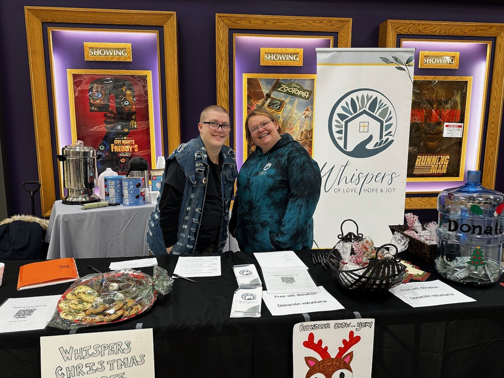
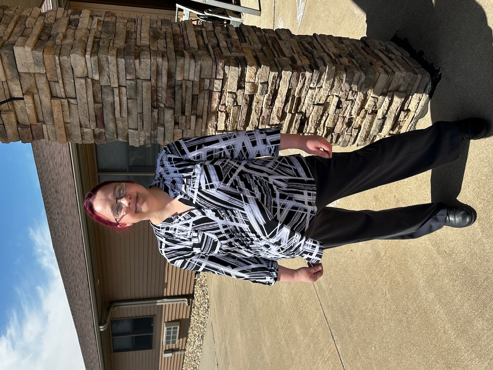
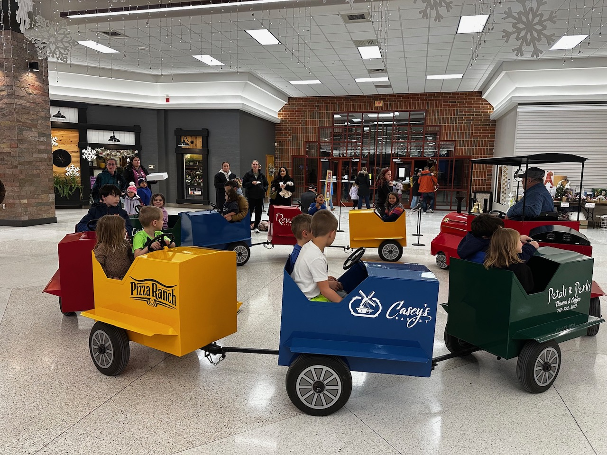

Advocacy and practical guidance
Company at court hearings, HHS meetings, benefit applications, housing searches, and other decisions that are easier with someone beside you.
02 What we do
Safety matters first, but it is rarely the last thing a woman or family needs. We stay through the practical decisions, the hard appointments, the small victories, and the work of building a life that feels like your own again.


“He heals the brokenhearted and binds up their wounds.” Psalm 147:3
A longer view
Healing is not a straight line or a checklist. Support changes as life changes, so we listen, adjust, and keep showing up for the next honest step.
Whole-person support
Every woman arrives with different strengths, responsibilities, questions, and goals. Together, we shape support around what is happening now and what she wants life to become.
Company at court hearings, HHS meetings, benefit applications, housing searches, and other decisions that are easier with someone beside you.
Families may live at the Talitha Koum Healing Campus for up to 18 months at no cost, with time and space to begin again.
Help identifying strengths, preparing for employment, pursuing education or training, and taking practical steps toward meaningful work.
Financial literacy, transportation, household routines, parenting support, and the everyday tools that build confidence and independence.
Connections to counseling, healthcare, legal resources, and trusted community partners when specialized support is needed.
A Christ-centered community where faith is lived with care and help remains welcoming to women from every background.

“This is the day that the Lord has made; let us rejoice and be glad in it.” Psalm 118:24
The life between
A ride across town, cooking together, a child laughing on the playground, a first paycheck, a hard conversation, or a quiet morning that finally feels calm: These moments are not separate from the work. They are the work.
How we work
01
You know your life better than anyone. We begin with what you are experiencing and what matters most to you.
02
The right next step may change. Support can grow, pause, or shift as your circumstances and goals change.
03
Trust takes time. We remain present through setbacks, milestones, ordinary days, and the work that comes after crisis.
Wherever you are starting
Tell us what is happening, or simply tell us you are not sure what to do. We will listen and help you consider what comes next.
Get Help